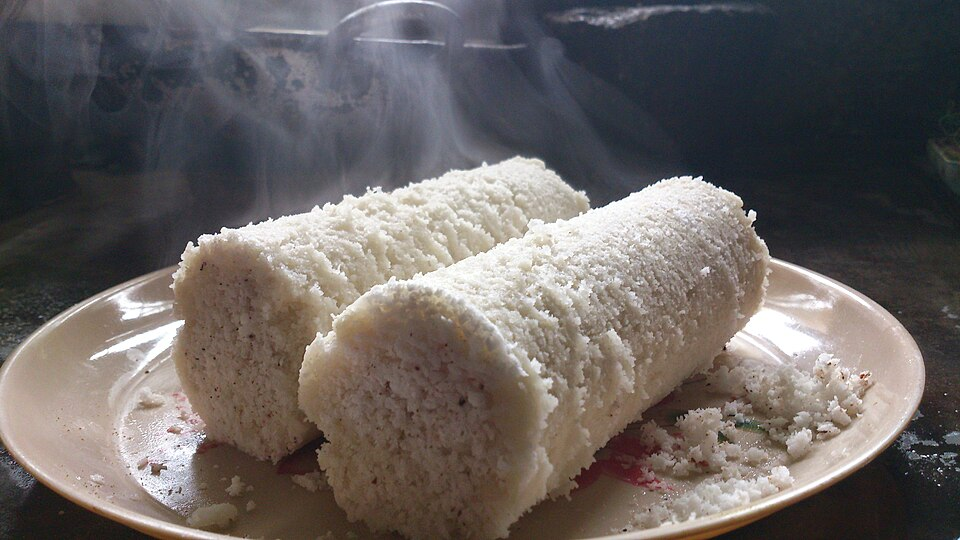

Puttu

Description
Puttu is a popular breakfast in Kerala. The steam baked dish is healthy and tasty.
Ingredients
- 1 cup rice flour
- 1/2 cup grated coconut
- 1/2 tsp salt
- Water as needed
Steps
- Mix rice flour, salt, and water to form a dough.
- Layer the dough with grated coconut in a puttu maker.
- Steam for about 10-15 minutes until cooked.
- Serve hot with banana or curry.
Home